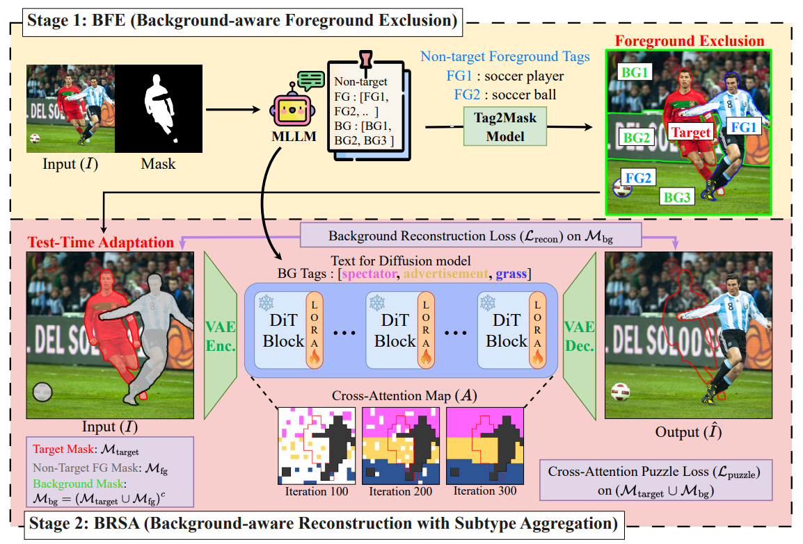
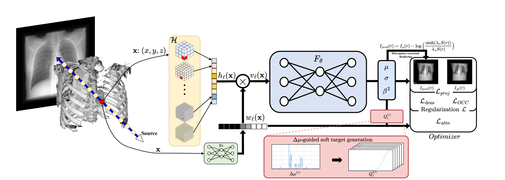
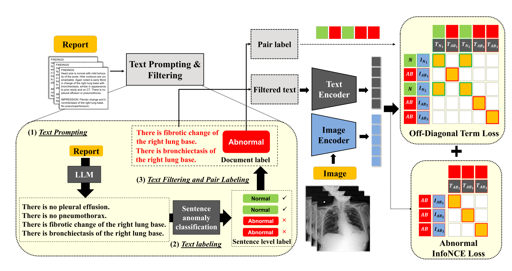

I work on generative models for image restoration and generation, which I treat as inverse problems. I am mainly interested in reducing their need for task-specific training and data, using training-free and few-step methods that reuse the priors already in pretrained models. These apply across object removal and inpainting, few-step image and video generation, and reconstruction in both natural and medical imaging.
I am currently an Integrated M.S. & Ph.D. student at Seoul National University, and I hold a dual B.S. in Biomedical Engineering and Artificial Intelligence from Korea University. I also research at OGQ.



Education
Integrated M.S. & Ph.D., Biomedical Sciences
Advisor: Prof. Kyungsu Kim
B.S., Biomedical Engineering & Artificial Intelligence (dual)
GPA 3.9 / 4.5
Experience
AI Research Engineer
SOTA generative AI with diffusion and flow matching — image/video inpainting, object removal, and editing/composition.
Reviewer
Reviewed computer vision submissions with Prof. Kyungsu Kim.
Research Proposal
Core-AI mapping of real-time EEG dynamics to MRI-standard biomarkers for brain-tumor monitoring and prognosis.
Research Intern
Under-sampled MRI reconstruction via cross-domain CNNs with data consistency.
Grants & Funding
Development of Multimodal Data Integration Technology and an AI Service Platform for Intelligent Design Process Management
Lead proposal author; wrote the winning proposal and secured the grant (PI: Prof. Kyungsu Kim). ₩600M (≈ US$390K) over three years.